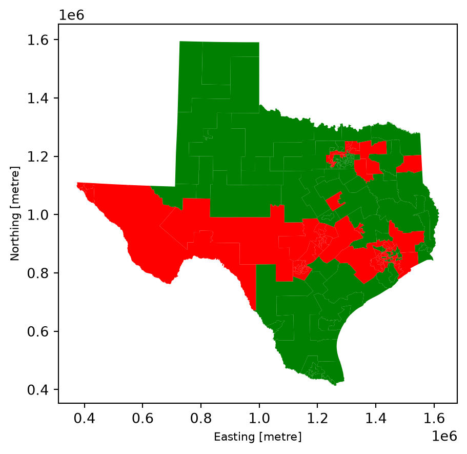
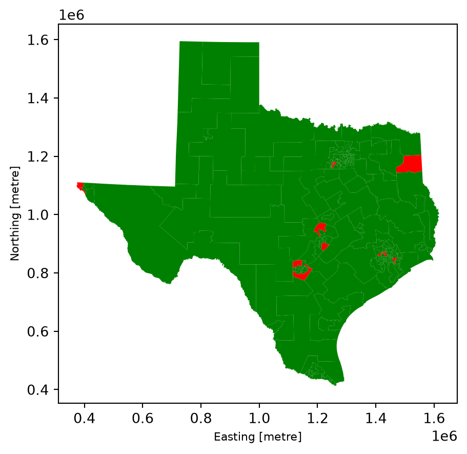
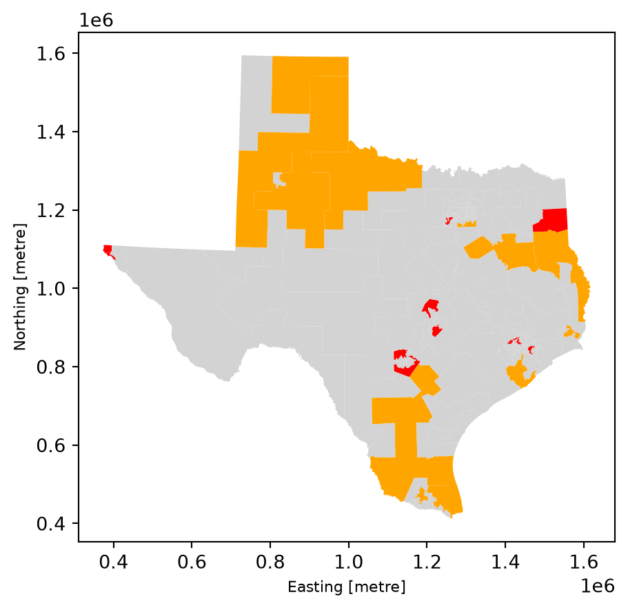
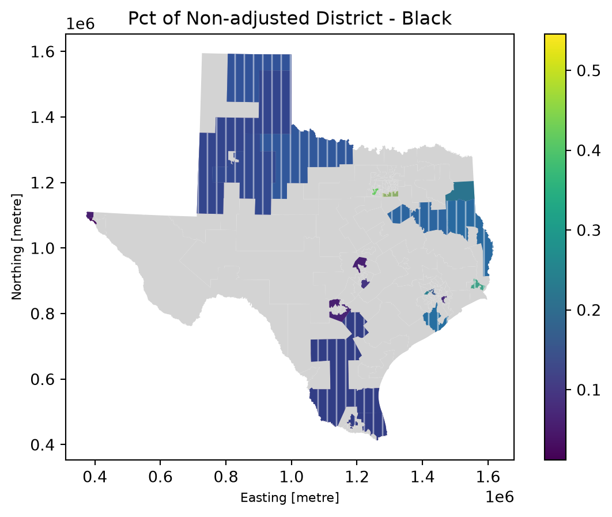
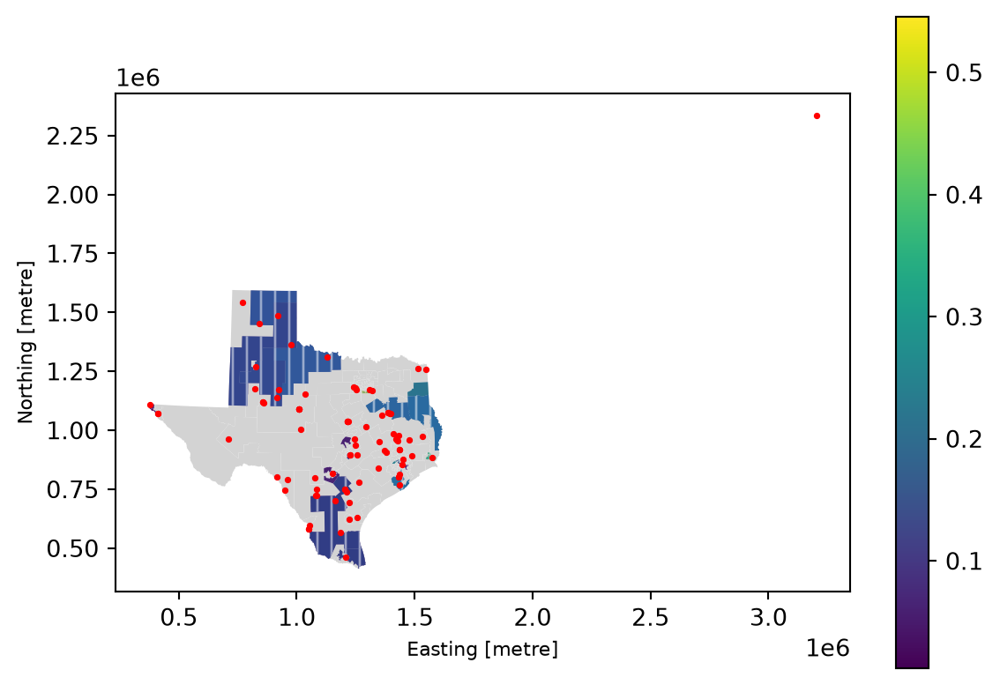
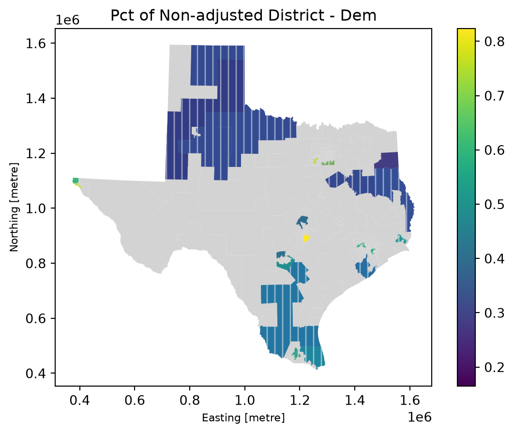
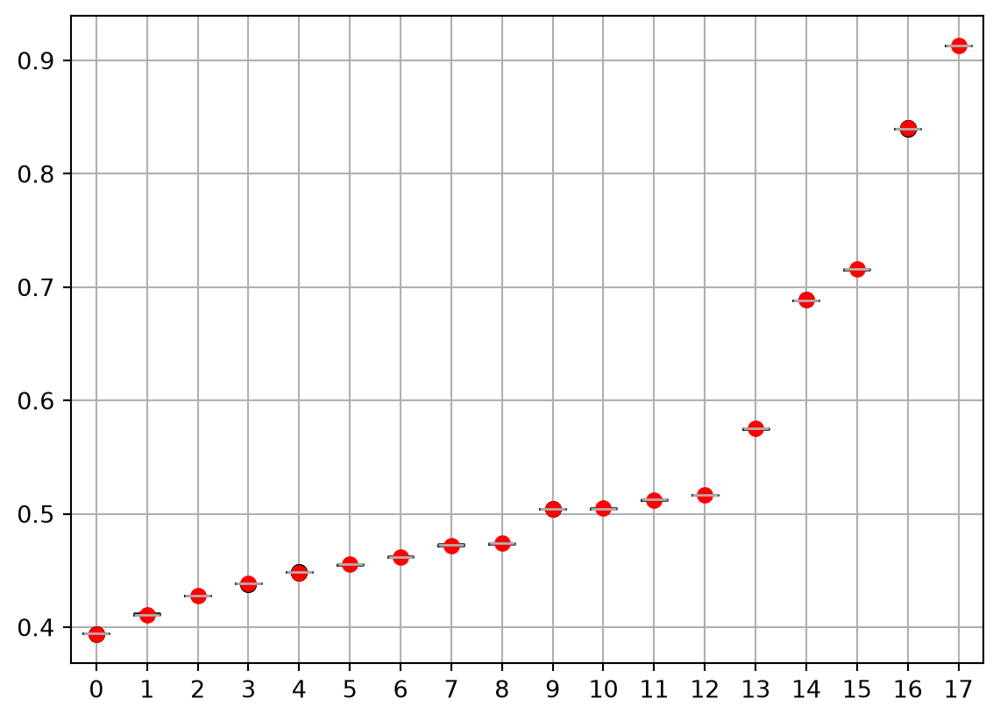

import pandas as pd
import numpy as np
import matplotlib.pyplot as plt
import shapely
import geopandas as gpd
from gerrychain import (
GeographicPartition,
Partition,
Graph,
MarkovChain,
updaters,
constraints,
accept,
Election,
)
from gerrychain.proposals import ReCom
from gerrychain.constraints import contiguous
from gerrychain.examples import gerrymandria
from functools import partial
import pandas
from gerrychain.accept import always_accept
from gerrychain.constraints import single_flip_contiguous
from gerrychain.proposals import propose_random_flip
from gerrychain.constraints import contiguous
import tqdmInitial Questions
Stage 2.1: Initial Explorations of the Dataset.
About
Dataset
The dataset is Redistricting Data Hub Counterfactual Prisoner Adjusted Redistricting Data. It is stored in the projects/rae/data folder, alongside relevant demographic, election, and prison location datasets taken from Dave’s Redistricting App.
Research Question
My initial research question is very specific “Would prisoner reallocation have changed the distribution of possible legal maps and therefore partisan outcomes in Texas during the 2020 redistricting cycle?” This question is motivated by research done with a professor in the mathematics department developing a new fairness baseline for redistricting. The analysis below was done to better understand the counterfactual data that I am working with before I conduct my formal analysis which will involve using the GerryChain package to sample from the universe of possible maps.
Loading the Data
df_dist = pd.read_excel('data/Texas_district_reallocation_results.xlsx')
df_block = pd.read_csv('data/Texas_block_returning_data.csv')
df_dist.head()| district_h | total | white | black | latino | other | pctwhite | adjtotal | adjwhite | adjblack | adjlatino | adjother | changepop | changew | changeb | changel | changeo | toosmall | toobig | |
|---|---|---|---|---|---|---|---|---|---|---|---|---|---|---|---|---|---|---|---|
| 0 | 1 | 194995 | 128452 | 41405 | 15298 | 9840 | 0.658745 | 194277.0 | 128799.0 | 41163.000 | 14478.00 | 9837.000 | -718.0007 | 346.9994 | -241.9999 | -820.00000 | -3.000029 | 0.0 | 0.0 |
| 1 | 2 | 196284 | 139560 | 13652 | 33228 | 9844 | 0.711011 | 197753.0 | 140530.0 | 14027.000 | 33347.00 | 9849.000 | 1469.0000 | 970.0002 | 375.0000 | 118.99990 | 4.999865 | 0.0 | 0.0 |
| 2 | 3 | 202477 | 120870 | 8584 | 60199 | 12824 | 0.596957 | 203253.1 | 121361.4 | 8693.061 | 60370.69 | 12827.960 | 776.1370 | 491.4169 | 109.0608 | 171.69420 | 3.964969 | 0.0 | 0.0 |
| 3 | 4 | 195819 | 115380 | 27148 | 44027 | 9264 | 0.589218 | 196703.4 | 115919.8 | 27401.820 | 44115.78 | 9266.000 | 884.3703 | 539.7695 | 253.8168 | 88.78423 | 1.999943 | 0.0 | 0.0 |
| 4 | 5 | 186084 | 125669 | 16588 | 35845 | 7982 | 0.675335 | 186882.3 | 126276.8 | 16803.160 | 35824.16 | 7978.102 | 798.2596 | 607.8332 | 215.1621 | -20.83765 | -3.898047 | 0.0 | 0.0 |
#this is the same results as above but broken down by block group
df_block.head()| blockid | district_h | district_s | total | white | black | latino | other | adjtotal | adjwhite | adjblack | adjlatino | adjother | |
|---|---|---|---|---|---|---|---|---|---|---|---|---|---|
| 0 | 483439502005063 | 1 | 1 | 21 | 17 | 1 | 3 | 0 | 21.10451 | 17.07711 | 1.017241 | 3.010152 | 0.0 |
| 1 | 482770005003034 | 1 | 1 | 21 | 6 | 2 | 13 | 0 | 21.19155 | 6.07077 | 2.070690 | 13.050090 | 0.0 |
| 2 | 484019512003070 | 11 | 1 | 0 | 0 | 0 | 0 | 0 | 0.00000 | 0.00000 | 0.000000 | 0.000000 | 0.0 |
| 3 | 480370111023013 | 1 | 1 | 0 | 0 | 0 | 0 | 0 | 0.00000 | 0.00000 | 0.000000 | 0.000000 | 0.0 |
| 4 | 483879505022077 | 1 | 1 | 0 | 0 | 0 | 0 | 0 | 0.00000 | 0.00000 | 0.000000 | 0.000000 | 0.0 |
First question: Change in population
I notice there’s a column in the districts dataset that examines the change in total population, and the change disaggregated by racial group. What’s the average change in the House Districts’ total populations?
#on average districts change by 1,211 people BUT this tells me nothing about whether we've lost or gained
print(df_dist['changepop'].abs().aggregate('mean'))
#did more districts lose or gain population? GAIN
np.sign(df_dist['changepop']).sum()1211.7212242np.float64(89.0)I know that on average districts changed by 1211, and 89 more House Districts gained total population than lost it.
Question 1.5: Of the districts that ended up gaining individuals, what was the average gain?
df_dist[df_dist['changepop']>0]['changepop'].mean()np.float64(763.6982107563026)On average, a district that gained individuals gained 763 indivudals. That is 763/194,303 or .4% of an ideal TX state house district.
Second question: Successful reallocation?
How many people were successfully reallocated?
Let’s try to subtract the total population added to districts from the total removed from districts. This should tell us how many incarcerated individuals were removed but never actually reallocated.
total_added = df_dist[df_dist['changepop']>0]['changepop'].sum()
total_lost = df_dist[df_dist['changepop']<0]['changepop'].sum()
difference = abs(total_lost)-total_added
print(total_added, total_lost, difference)90880.08708000001 -90878.09655 -1.9905300000100397Okay seems like more people were reallocated than removed. Let’s go find the documentation to investigate…
First, exact addresses or home addresses were not use. Sentencing county was used. Then a single block group received x% of the returning population of specific demographic to a county. X is the proportion of the county’s non-incarcerated population with the same demographic marker.
The two individuals removed but not reallocated stems from two dropped observations: one person from out of state and the other an individual with an unknown race.
Third question: Change in population by demographic
it_list = ['changew','changeb', 'changel', 'changeo']
for item in it_list:
print(f"======={item}=======")
print("Mean", df_dist[item].mean())
print("Mean Abs", df_dist[item].abs().mean())
print("Gain or Lose?", np.sign(df_dist[item].sum()))=======changew=======
Mean 3.200000010110671e-06
Mean Abs 384.79816626666667
Gain or Lose? 1.0
=======changeb=======
Mean 0.006653119999997822
Mean Abs 433.88822992
Gain or Lose? 1.0
=======changel=======
Mean 0.006634460000010828
Mean Abs 426.60481500666674
Gain or Lose? 1.0
=======changeo=======
Mean 7.726666666864427e-06
Mean Abs 7.73007488
Gain or Lose? 1.0=======changew=======
Mean 3.200000010110671e-06
Mean Abs 384.79816626666667
Gain or Lose? 1.0
=======changeb=======
Mean 0.006653119999997822
Mean Abs 433.88822992
Gain or Lose? 1.0
=======changel=======
Mean 0.006634460000010828
Mean Abs 426.60481500666674
Gain or Lose? 1.0
=======changeo=======
Mean 7.726666666864427e-06
Mean Abs 7.73007488
Gain or Lose? 1.0
Okay it seems like across all four racial demographics just barely more districts gained population than lost it. The mean changes in the white, black, Latino, and “other” population are 384.80, 433.89, 426.60, 7.773, respectively.
Fourth question: Now I’m curious how much each districts total population is under or over the actual population baseline for a single congressional district in TX
ideal = 194303
df_dist['dif_from_ideal'] = df_dist['adjtotal'] - ideal
df_dist.sort_values('dif_from_ideal', ascending = False)
#if negative then ideal is greater than the adjusted, aka its too small compared to ideal once adjusted
#if greater then ideal is greater than the adjusted, aka its too large compared to ideal once adjusted | district_h | total | white | black | latino | other | pctwhite | adjtotal | adjwhite | adjblack | adjlatino | adjother | changepop | changew | changeb | changel | changeo | toosmall | toobig | dif_from_ideal | |
|---|---|---|---|---|---|---|---|---|---|---|---|---|---|---|---|---|---|---|---|---|
| 150 | Total N | 29145505 | 11584597 | 3727721 | 11441717 | 2391470 | NaN | 29145507.0 | 1.158460e+07 | 3.727722e+06 | 11441717.95 | 2391470.016 | NaN | NaN | NaN | NaN | NaN | NaN | NaN | 28951204.0 |
| 94 | 95 | 203993 | 38168 | 83226 | 72684 | 9915 | 0.187104 | 205273.5 | 3.830745e+04 | 8.410066e+04 | 72946.45 | 9918.901 | 1280.4620 | 139.44730 | 874.6624 | 262.4506 | 3.901247 | 0.0 | 1.0 | 10970.5 |
| 121 | 122 | 203881 | 99012 | 9889 | 76258 | 18722 | 0.485636 | 204651.6 | 9.926726e+04 | 9.991753e+03 | 76664.40 | 18728.200 | 770.6061 | 255.26310 | 102.7526 | 406.3950 | 6.195920 | 0.0 | 1.0 | 10348.6 |
| 6 | 7 | 202803 | 116958 | 43098 | 34268 | 8479 | 0.576707 | 204635.0 | 1.178020e+05 | 4.395000e+04 | 34402.00 | 8481.000 | 1832.0000 | 844.00000 | 852.0003 | 133.9997 | 2.000018 | 0.0 | 1.0 | 10332.0 |
| 143 | 144 | 203960 | 27741 | 13775 | 154151 | 8293 | 0.136012 | 204626.1 | 2.780907e+04 | 1.392802e+04 | 154592.80 | 8296.249 | 666.1279 | 68.07454 | 153.0226 | 441.7816 | 3.249485 | 0.0 | 1.0 | 10323.1 |
| ... | ... | ... | ... | ... | ... | ... | ... | ... | ... | ... | ... | ... | ... | ... | ... | ... | ... | ... | ... | ... |
| 87 | 88 | 186059 | 86426 | 6355 | 88538 | 4740 | 0.464509 | 182985.0 | 8.563000e+04 | 5.357000e+03 | 87285.00 | 4713.000 | -3074.0000 | -796.00030 | -998.0000 | -1253.0000 | -27.000000 | 1.0 | 0.0 | -11318.0 |
| 30 | 31 | 184966 | 45168 | 2844 | 133026 | 3928 | 0.244196 | 182527.0 | 4.444600e+04 | 1.903000e+03 | 132267.00 | 3911.000 | -2439.0000 | -722.00020 | -941.0000 | -759.0003 | -17.000000 | 1.0 | 0.0 | -11776.0 |
| 21 | 22 | 186322 | 51597 | 76614 | 48640 | 9471 | 0.276924 | 182249.0 | 4.977468e+04 | 7.570279e+04 | 47311.48 | 9460.038 | -4073.0130 | -1822.31600 | -911.2122 | -1328.5230 | -10.962320 | 1.0 | 0.0 | -12054.0 |
| 7 | 8 | 192599 | 115289 | 27665 | 42337 | 7308 | 0.598596 | 179796.6 | 1.113362e+05 | 2.252418e+04 | 38696.22 | 7240.000 | -12802.3700 | -3952.76900 | -5140.8170 | -3640.7840 | -68.000090 | 1.0 | 0.0 | -14506.4 |
| 24 | 25 | 186855 | 80425 | 33865 | 55714 | 16851 | 0.430414 | 179478.7 | 7.815529e+04 | 3.108980e+04 | 53423.05 | 16810.530 | -7376.3360 | -2269.71100 | -2775.1960 | -2290.9550 | -40.473540 | 1.0 | 0.0 | -14824.3 |
151 rows × 20 columns
House District 95, once adjusted has 10,970.5 more individuals than the ideal district, meaning that many people have been removed from the district’s population via the prison pipeline. On the other hand, district 24 has 14,824.3 fewer people than the ideal, meaning that in actuality, its population is inflated by inmates. All other districts have differences from ideal that are between 10,970 and 14,824.
Fifth question: Geographic patterns?
Since gerrymandering is inherently geographic, I’m curious whether there are geographic patterns to the districts that gain vs. lose population after adjustment. This should be the same thing as finding whether the adjusted districts are too big (i.e., population was gained) or too small (i.e., population was lost).
First I need to get the Texas house district shape files to plot.1
#importing the 2022 HD shapes (this should be pre- recent mid-decade redistricting)
district_shape = gpd.read_file('data/TX-2022-State-House-district-shapes-no-landmarks.geojson')#switching the coordinate system for plotting
district_shape.crs
district_shape = district_shape.to_crs('EPSG:3081')
district_shape.crs<Projected CRS: EPSG:3081>
Name: NAD83 / Texas State Mapping System
Axis Info [cartesian]:
- X[east]: Easting (metre)
- Y[north]: Northing (metre)
Area of Use:
- name: United States (USA) - Texas.
- bounds: (-106.66, 25.83, -93.5, 36.5)
Coordinate Operation:
- name: Texas State Mapping System (meter)
- method: Lambert Conic Conformal (2SP)
Datum: North American Datum 1983
- Ellipsoid: GRS 1980
- Prime Meridian: GreenwichWhy do I get two different results for the plots below? Probably because toobig and toosmall variables are based on the legal definition of being too big or small.
df_dist_wshape = pd.concat([district_shape[['geometry']],df_dist], axis = 1)
df_dist_wshape['color'] = df_dist_wshape['dif_from_ideal'].apply(lambda x: 'red' if x > 0.0 else 'green' )
df_dist_wshape.plot(color = df_dist_wshape['color'])
color_map = {-1.0: 'blue', 1.0: 'red', 0.0: 'green'}
color = df_dist_wshape['toobig'].map(color_map)
df_dist_wshape.plot(color = color)
df_dist_wshape['toobig'].value_counts()toobig
0.0 139
1.0 11
Name: count, dtype: int64Okay, so I assume that some districts can be too big, too small, or neither, but because toobig and toosmall are binary indicators, I need to make a column that accounts for all three options.
df_dist_wshape['size'] = np.where(df_dist_wshape['toobig'] == 1.0, 'big',
np.where(df_dist_wshape['toosmall'] == 1.0, 'small', 'neither'))df_dist_wshape.head()
color_map = {'neither': 'lightgrey', 'big': 'red', 'small': 'orange'}
color = df_dist_wshape['size'].map(color_map)
df_dist_wshape.plot(color = color)
Great, it seems like all of the districts that are too big once people are reallocated are districts near/encompassing cities, while the ones that shrink are in more rural. This makes sense given what we know.
Sixth question: Racial Demographics
Now lets look at the demographic breakdowns of these counties; specifically the percent of the population that is black.
tx_dist_info = pd.read_csv('data/district-data.csv')rel_districts = list(df_dist_wshape[df_dist_wshape['size'] != 'neither']['district_h'])
#texas demo info is by district so should map perfectly!
# tx_dist_info['Label'].value_counts()
# df_dist_wshape['district_h'].value_counts()
tx_dist_info = tx_dist_info.drop(0, axis = 0 ).reset_index()df_150 = pd.concat([tx_dist_info, df_dist_wshape], axis = 1)
df_150.head()| index | ID | Label | T_20_CENS_Total | T_20_CENS_White | T_20_CENS_Hispanic | T_20_CENS_Black | T_20_CENS_Asian | T_20_CENS_Native | T_20_CENS_Pacific | ... | changepop | changew | changeb | changel | changeo | toosmall | toobig | dif_from_ideal | color | size | |
|---|---|---|---|---|---|---|---|---|---|---|---|---|---|---|---|---|---|---|---|---|---|
| 0 | 1.0 | 1.0 | 1 | 194995.0 | 128452.0 | 15298.0 | 42039.0 | 2545.0 | 7213.0 | 364.0 | ... | -718.0007 | 346.9994 | -241.9999 | -820.00000 | -3.000029 | 0.0 | 0.0 | -26.0 | green | neither |
| 1 | 2.0 | 2.0 | 2 | 196284.0 | 139560.0 | 33228.0 | 14239.0 | 2453.0 | 7245.0 | 431.0 | ... | 1469.0000 | 970.0002 | 375.0000 | 118.99990 | 4.999865 | 0.0 | 0.0 | 3450.0 | red | neither |
| 2 | 3.0 | 3.0 | 3 | 202477.0 | 120870.0 | 60199.0 | 9464.0 | 7014.0 | 6889.0 | 467.0 | ... | 776.1370 | 491.4169 | 109.0608 | 171.69420 | 3.964969 | 0.0 | 0.0 | 8950.1 | red | neither |
| 3 | 4.0 | 4.0 | 4 | 195819.0 | 115380.0 | 44027.0 | 28261.0 | 3565.0 | 6517.0 | 353.0 | ... | 884.3703 | 539.7695 | 253.8168 | 88.78423 | 1.999943 | 0.0 | 0.0 | 2400.4 | red | neither |
| 4 | 5.0 | 5.0 | 5 | 186084.0 | 125669.0 | 35845.0 | 17228.0 | 1768.0 | 6217.0 | 241.0 | ... | 798.2596 | 607.8332 | 215.1621 | -20.83765 | -3.898047 | 0.0 | 0.0 | -7420.7 | green | neither |
5 rows × 43 columns
#lets check that the T_20 CENS total is the same as/close to as the pre-reallocation totals
print(df_150.columns)
df_150[['T_20_CENS_Total', 'total']]
df_150['CENS_total_diff'] = df_150['T_20_CENS_Total']- df_150['total']Index(['index', 'ID', 'Label', 'T_20_CENS_Total', 'T_20_CENS_White',
'T_20_CENS_Hispanic', 'T_20_CENS_Black', 'T_20_CENS_Asian',
'T_20_CENS_Native', 'T_20_CENS_Pacific', 'V_20_VAP_Total',
'V_20_VAP_White', 'V_20_VAP_Hispanic', 'V_20_VAP_Black',
'V_20_VAP_Asian', 'V_20_VAP_Native', 'V_20_VAP_Pacific',
'E_16-20_COMP_Total', 'E_16-20_COMP_Dem', 'E_16-20_COMP_Rep',
'geometry', 'district_h', 'total', 'white', 'black', 'latino', 'other',
'pctwhite', 'adjtotal', 'adjwhite', 'adjblack', 'adjlatino', 'adjother',
'changepop', 'changew', 'changeb', 'changel', 'changeo', 'toosmall',
'toobig', 'dif_from_ideal', 'color', 'size'],
dtype='str')df_150['CENS_total_diff_pct'] = df_150['CENS_total_diff']/df_150['total']
df_150['CENS_total_diff_pct'].sort_values()0 0.0
1 0.0
2 0.0
3 0.0
4 0.0
...
146 0.0
147 0.0
148 0.0
149 0.0
150 NaN
Name: CENS_total_diff_pct, Length: 151, dtype: float64There is no difference between the 2020 Census totals and the totals in the adjusted data!
print(tx_dist_info.index)
print(df_dist_wshape.index)
df_150.head()
fig, ax = plt.subplots()
df_150 = df_150.set_geometry('geometry')
# df_150 = df_150.to_crs('EPSG: 3081')
df_150['pct_black'] = df_150['T_20_CENS_Black'] / df_150['T_20_CENS_Total']
df_150.plot(ax = ax, color = 'lightgrey')
df_150[df_150['district_h'].isin(rel_districts)].plot(ax = ax, column = 'pct_black', legend = True)
df_150[df_150['toosmall'] == 1.0].plot(ax = ax, column = 'size', alpha = 0.5, hatch = '||', hatchcolor = 'white')
plt.title('Pct of Non-adjusted District - Black')RangeIndex(start=0, stop=150, step=1)
RangeIndex(start=0, stop=151, step=1)
Seems like there’s not an immediate racial correlation here. Some of the districts that gain people after reallocation have a high percent of black individuals, others do not.
Question 6.5: Hispanic Population?
Since TX has a large Hispanic population, what about the Hispanic demographic?
# print(tx_dist_info.index)
# print(df_dist_wshape.index)
# df_150.head()
fig, ax = plt.subplots()
df_150 = df_150.set_geometry('geometry')
# df_150 = df_150.to_crs('EPSG: 3081')
df_150['pct_hisp'] = df_150['T_20_CENS_Hispanic'] / df_150['T_20_CENS_Total']
df_150.plot(ax = ax, color = 'lightgrey')
df_150[df_150['district_h'].isin(rel_districts)].plot(ax = ax, column = 'pct_hisp', legend = True)
df_150[df_150['toosmall'] == 1.0].plot(ax = ax, column = 'size', alpha = 0.5, hatch = '||', hatchcolor = 'white')
plt.title('Pct of Non-adjusted District - Hispanic')Hmmm…seems like the Hispanic population is mostly in South Texas, which makes sense! But there doesn’t seem to be an immediate pattern in the Hispanic populations across “too big” and “too small” districts.
Next, I’d be interested to do this with the adjusted data. I doubt this will yield shockingly different results, so I’ll hold off for now.
Seventh question: Prison Locations
Lets plot the correctional facilities in TX. I think I know which districts in which they might fall…
# #five largest state run prisons in texas, 3 seem to be in the same place
# adresses = pd.Series(['2661 FM 2054, Tennessee Colony, TX 75884', '2101 FM 369, Iowa Park, TX 76367', '9601 Spur 591, Amarillo, TX 79107', '1391 FM 3328, Tennessee Colony, TX 75880', '2664 FM 2054, Tennessee Colony, TX 75886'])
# prisons_gdf = gpd.tools.geocode(adresses)
# #, verify = False) this doesn't work :(
# prisons_gdf.head()
#^the approach above didn't work
prison_gdf = gpd.read_file('data/TX_prisons.geojson')df_150 = df_150.set_geometry('geometry', crs = 3081)
fig, axis = plt.subplots()
df_150.plot(ax = axis, color = 'lightgrey')
df_150[df_150['district_h'].isin(rel_districts)].plot(ax = axis, column = 'pct_black', legend = True)
df_150[df_150['toosmall'] == 1.0].plot(ax = axis, column = 'size', alpha = 0.5, hatch = '||', hatchcolor = 'white')
prison_gdf.plot(ax = axis, color = 'red', markersize = 3)
Hmm, it seems like prisons also exist in areas that become “too big” after reallocation. However, that may be due to the existence of lower security or municipal prisons in the area.
Not sure how to get rid of the outlier point!
Eighth question: The plots above used the pct_black with the unadjusted totals/Census counts. Do the results change when we ue the adjusted data?
fig, ax2 = plt.subplots()
df_150['adj_pct_black'] = df_150['adjblack'] / df_150['adjtotal']
df_150.plot(ax = ax2, color = 'lightgrey')
df_150[df_150['district_h'].isin(rel_districts)].plot(ax = ax2, column = 'adj_pct_black', legend = True)
df_150[df_150['toosmall'] == 1.0].plot(ax = ax2, column = 'size', alpha = 0.5, hatch = '||', hatchcolor = 'white')
plt.title('Pct of Adjusted District - Black')It doesn’t look like anything changed.
Ninth question: What about partisanship? Are there partisan patterns to the way in which people are distributed?
df_elect = pd.read_csv('data/district-election-data.csv')[['E_16-20_COMP_Total', 'E_16-20_COMP_Dem', 'E_16-20_COMP_Rep']]
df_elect = df_elect.drop(0, axis = 0).reset_index()df_elect.head()
df_elect_shape = pd.concat([df_elect, df_dist_wshape], axis = 1)
df_elect_shape.head()
fig, ax3 = plt.subplots()
df_150['Dem_vote_share'] = df_150['E_16-20_COMP_Dem'] / df_150['E_16-20_COMP_Total']
df_150.plot(ax = ax3, color = 'lightgrey')
df_150[df_150['district_h'].isin(rel_districts)].plot(ax = ax3, column = 'Dem_vote_share', legend = True)
df_150[df_150['toosmall'] == 1.0].plot(ax = ax3, column = 'size', alpha = 0.5, hatch = '||', hatchcolor = 'white')
plt.title('Pct of Non-adjusted District - Dem')
There are much clearer partisan patterns to this. Most of the counties that are “too big” after reallocation voted Democratic, so this confirms that there are partisan consequences to prison gerrymandering in Texas, as the literature suggests.
Future questions
Tenth question: What’s the distribution of legal maps after reallocation?
Below I’m attempting to run the Flip Chain MCMC method using Gerrychain. This seems to work on the PA data so for stage 3. During the next stage, I’ll try to do this with Texas 2020 VTD data.
pa_chain = MarkovChain(
total_steps=40,
rng=2024,
)
graph = Graph.from_json("data/PA_VTDs.json")
my_updaters = {"population": updaters.Tally("TOT_POP", alias="population")}
pa_chain.initial_partition = GeographicPartition(
graph, assignment="2011_PLA_1", updaters=my_updaters
)
elections_updaters = {
"SEN10": Election("SEN10", {"Democratic": "SEN10D", "Republican": "SEN10R"}),
"SEN12": Election("SEN12", {"Democratic": "USS12D", "Republican": "USS12R"}),
"SEN16": Election("SEN16", {"Democratic": "T16SEND", "Republican": "T16SENR"}),
"PRES12": Election("PRES12", {"Democratic": "PRES12D", "Republican": "PRES12R"}),
"PRES16": Election("PRES16", {"Democratic": "T16PRESD", "Republican": "T16PRESR"}),
}
pa_chain.add_updaters(elections_updaters)
ideal_population = sum(pa_chain.initial_partition["population"].values()) / len(
pa_chain.initial_partition
)
# pa_chain.proposal_fn = build_recom_proposal_fn(
# pop_col="TOT_POP",
# pop_target=ideal_population,
# epsilon=0.02,
# )
pa_chain.proposal_fn = propose_random_flip
pa_chain.add_constraint(contiguous)
pa_chain.acceptance_fn = always_acceptdef cut_edges_length(partition):
return len(partition["cut_edges"])
pa_chain.add_constraint(
constraints.UpperBound(cut_edges_length, 2 * len(pa_chain.initial_partition["cut_edges"]))
)data = pandas.DataFrame(
sorted(partition["SEN12"].percents("Democratic"))
for partition in pa_chain.with_progress_bar()
)
ax5 = data.boxplot(positions=range(len(data.columns)))
plt.plot(data.iloc[0], "ro")
plt.show()
Eleventh question: Where in TX, if anywhere, have new prisons been built since the last census (2010)?
Footnotes
Source: https://gis-txdot.opendata.arcgis.com/datasets/0627be7aa6f0440081bd750734761a63_0/about↩︎